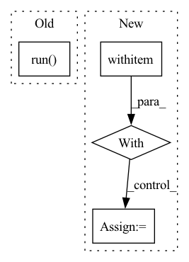

Pattern ID :23831
Before Change
// Test throughput parsing
test_throughput_output = "Throughput: 46.8 ms\n\n\n\n"
self.perf_mock.set_perf_analyzer_result_string(test_throughput_output)
throughput_record, _ = perf_client.run()
self.assertEqual(throughput_record.value(), 46.8)
// Test parsing for both
test_both_output = "Throughput: 0.001 ms\nAvg latency: 3.6 ms\n\n\n\n"After Change
self.assertEqual(records[1].value(), 0.001)
// Test exception handling
with self.assertRaisesRegex(
expected_exception=TritonModelAnalyzerException,
expected_regex="Running perf_analyzer with",
msg="Expected TritonModelAnalyzerException"):
self.perf_mock.raise_exception_on_run()
_ = perf_analyzer.run(perf_tags)
self.server.stop()
In pattern: SUPERPATTERN
Frequency: 3
Non-data size: 4
Instances Fragment ID: 74324670
Project Name: triton-inference-server/model_analyzer
Commit Name: c56ce95ea91dc842faf12a9f8b8da0075734f4a1
Time: 2020-11-24
Author: asramesh@nvidia.com
File Name: tests/test_perf_analyzer.py
M Class Name: TestPerfAnalyzerMethods
N Class Name: TestPerfAnalyzerMethods
M Method Name: test_run(2)
N Method Name: test_run(2)
M Parent Class: trc.TestResultCollector
N Parent Class: trc.TestResultCollector
M File Name: tests/test_perf_analyzer.py
N File Name: tests/test_perf_analyzer.py
M Start Line: 110
M End Line: 139
N Start Line: 110
N End Line: 155
Before Change
"Next, you will be prompted to generate a project from the "
"template."
)
CopierApp.run(
["copier", "gh:zenml-io/zenml-project-templates", str(path)],
exit=False,
)
with console.status(f"Initializing ZenML repository at {path}.\n"):
try:
Client.initialize(root=path)After Change
"prompt": not starter,
}
with event_handler(
event=AnalyticsEvent.GENERATE_TEMPLATE, metadata=metadata
):
console.print(zenml_cli_privacy_message, width=80)
if not starter:
from rich.markdown import Markdown
prompt_message = Markdown(
//// üßë‚Äçüè´ Project template parameters
Fragment ID: 74324671
Project Name: maiot-io/zenml
Commit Name: f76495fc9fb8d0062230aa7f9a5e0709112a9d43
Time: 2023-02-08
Author: stefan@zenml.io
File Name: src/zenml/cli/base.py
M Class Name: AnonimousClass
N Class Name: AnonimousClass
M Method Name: init(3)
N Method Name: init(2)
M Parent Class:
N Parent Class:
M File Name: src/zenml/cli/base.py
N File Name: src/zenml/cli/base.py
M Start Line: 70
M End Line: 91
N Start Line: 82
N End Line: 165
Before Change
try:
// TODO(suquark): For python>=3.7, "subprocess.run" supports capture
// of the output.
subprocess.run( [
"pip3", "wheel", "--no-deps", norm_path, "--wheel-dir",
str(wheel_dir)
],
stdout=subprocess.DEVNULL,
stderr=subprocess.PIPE,
check=True)
except subprocess.CalledProcessError as e:
raise RuntimeError("Fail to build pip wheel for Sky. "
f"Error message: {e.stderr.decode()}") from e
try:After Change
// This lock prevents that the wheel is updated while being copied.
// Although the current caller already uses a lock, we still lock it here
// to guarantee inherent consistency.
with filelock.FileLock(WHEEL_DIR.parent / ".wheels_lock"): // pylint: disable=E0110
// This implements a classic "compare, update and clone" consistency
// protocol. "compare, update and clone" has to be atomic to avoid
// race conditions.
last_modification_time = _get_latest_modification_time(SKY_PACKAGE_PATH)
last_wheel_modification_time = _get_latest_modification_time(WHEEL_DIR)
// only build wheels if the wheel is outdated Fragment ID: 74324690
Project Name: skypilot-org/skypilot
Commit Name: 0a608d00efa0185e4df609396072acb18083db19
Time: 2022-04-29
Author: suquark@gmail.com
File Name: sky/backends/wheel_utils.py
M Class Name: AnonimousClass
N Class Name: AnonimousClass
M Method Name: build_sky_wheel(0)
N Method Name: build_sky_wheel(0)
M Parent Class:
N Parent Class:
M File Name: sky/backends/wheel_utils.py
N File Name: sky/backends/wheel_utils.py
M Start Line: 39
M End Line: 73
N Start Line: 94
N End Line: 112